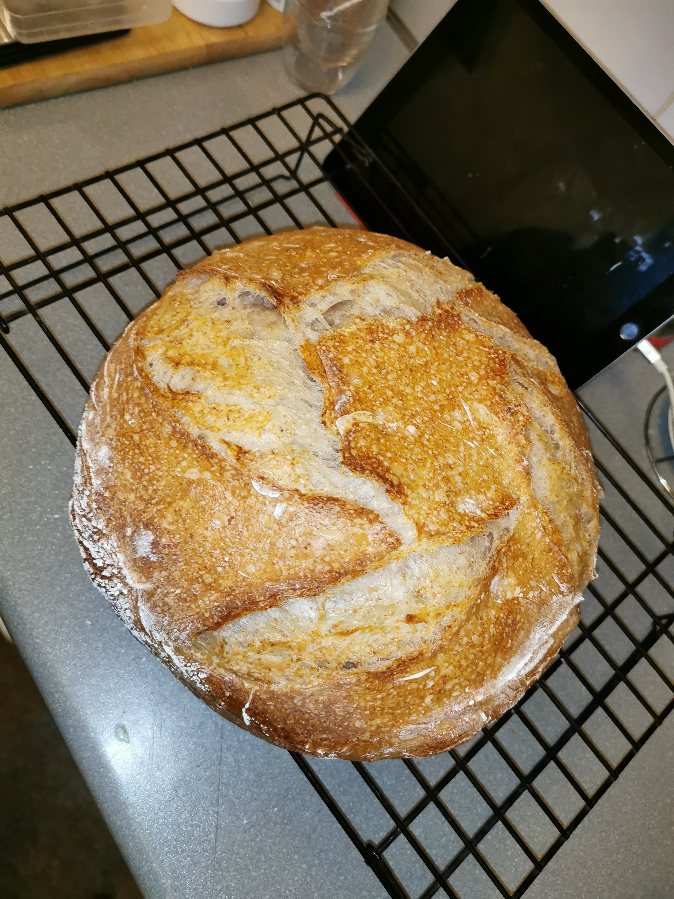

Sourdough Boule

Description: A perfectly baked sourdough loaf
This recipe will require a sourdough starter, we won't be making one here but if you were lucky enough to survive lockdown maybe you have one around?
Ingredients:
- 500g strong bread flour
- 300ml water
- 10g salt
- 200g sourdough starter
Method:
- In a stand mixer, add the water and sourdough starter
- mix thoroughly
- add the flour and salt, mix until combined
- let rest for 30 mins to autolyse
- knead until smooth
- place dough in a bowl in a warm dry place, wait 30 mins
- periodically, every 30 mins, stretch the dough, be sure to not knock out as many air bubbles as possible
- after it's been folded at least six times, transfer it to a floured banetton
- allow the final prove to occur for at least an hour
- place in a preheated oven, inside a dutch oven, cutting some lines with a lame, spraying with water before covering
- bake for 30 mins covered, 20 uncovered
- let cool before cutting, this is important despite how delicious this is gonna smell
- enjoy with some salted butter or dipped in olive oil and balsamic vinegar